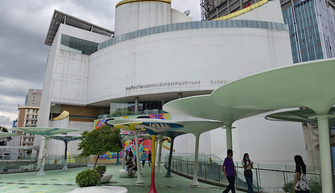

หอศิลปวัฒนธรรมแห่งกรุงเทพมหานคร

หอศิลปวัฒนธรรมแห่งกรุงเทพมหานคร
ห้องสมุดเพื่อการเรียนรู้สวนลุมพินี” ที่นี่เป็นห้องสมุดที่เหมาะสำหรับคนที่อยากมาอ่านหนังสือแบบชิล ๆ อ่านหนังสือหรือทำงานเสร็จแล้วเดินไปเล่นรอบสวนลุมพินีแบบชิล ๆ ส่วนใหญ่ห้องสมุดแห่งนี้จะจัดพื้นที่สำหรับมานั่งอ่านคนเดียว ดังนั้นใครที่ไม่อยากชวนเพื่อนหรืออยากมานั่งพักผ่อนคนเดียว ลองมาที่ห้องสมุดแห่งนี้แล้วจะติดใจ ส่วนโซนหนังสือมีให้เลือกหลายภาษา ทั้งภาษาไทยและภาษาต่างประเทศแบบจัดเต็ม อ่านต่อได้ที่
หอศิลปวัฒนธรรมแห่งกรุงเทพมหานคร (Bacc) ถือเป็นศูนย์กลางทางศิลปวัฒนธรรมใจกลางกรุงเทพอีกแห่งที่มาง่าย เดินทางสะดวกสุดๆ โดยหอศิลป์แห่งนี้เปิดอาคารแรกตั้งแต่วันที่ 19 สิงหาคม พ.ศ. 2548 แต่เค้าก่อสร้างเสร็จสมบูรณ์จริงๆ ในปี พ.ศ. 2551 อาคารของหอศิลป์ถูกออกแบบให้เป็นทรงกระบอก สูง 9 ชั้น ภายในแบ่งเป็นห้องแสดงผลงาน โรงภาพยนตร์ ห้องสมุด ห้องเก็บรักษาผลงาน ห้องประชุม ร้านค้า และร้านอาหาร และตั้งแต่ชั้น 6 เป็นต้นไป จะมีทางเดินลาดเอียงเลาะขึ้นไปตามชั้นต่างๆ ในรูปทรงกระบอกของอาคาร เพื่อให้คนดูได้เดินวนขึ้นมาดูผลงานศิลปะต่างๆ ได้อย่างต่อเนื่องอีกด้วย
นอกจากนี้ที่นี่ยังเป็นเหมือนมุม Instagrammable ที่คนเค้านิยมมาถ่ายรูปกันเยอะมาก เนื่องจากภายในอาคารนั้นถูกออกแบบให้เปิดรับแสงจากธรรมชาติเข้ามาได้อย่างเต็มที่ แต่ถ้าใครกังวลว่าแดดจะจ้าจนทำลายผลงานศิลปะได้ไหม อันนี้บอกเลยว่าอาคารเค้าถูกออกแบบมาอย่างดีแล้ว แสงที่ส่องเข้ามานั้น ไม่สามารถทำลายผลงานศิลปะได้
ห้องสมุดเพื่อการเรียนรู้สวนลุมพินี” ที่นี่เป็นห้องสมุดที่เหมาะสำหรับคนที่อยากมาอ่านหนังสือแบบชิล ๆ อ่านหนังสือหรือทำงานเสร็จแล้วเดินไปเล่นรอบสวนลุมพินีแบบชิล ๆ ส่วนใหญ่ห้องสมุดแห่งนี้จะจัดพื้นที่สำหรับมานั่งอ่านคนเดียว ดังนั้นใครที่ไม่อยากชวนเพื่อนหรืออยากมานั่งพักผ่อนคนเดียว ลองมาที่ห้องสมุดแห่งนี้แล้วจะติดใจ ส่วนโซนหนังสือมีให้เลือกหลายภาษา ทั้งภาษาไทยและภาษาต่างประเทศแบบจัดเต็ม อ่านต่อได้ที่
หอศิลปวัฒนธรรมแห่งกรุงเทพมหานคร (Bacc) ถือเป็นศูนย์กลางทางศิลปวัฒนธรรมใจกลางกรุงเทพอีกแห่งที่มาง่าย เดินทางสะดวกสุดๆ โดยหอศิลป์แห่งนี้เปิดอาคารแรกตั้งแต่วันที่ 19 สิงหาคม พ.ศ. 2548 แต่เค้าก่อสร้างเสร็จสมบูรณ์จริงๆ ในปี พ.ศ. 2551 อาคารของหอศิลป์ถูกออกแบบให้เป็นทรงกระบอก สูง 9 ชั้น ภายในแบ่งเป็นห้องแสดงผลงาน โรงภาพยนตร์ ห้องสมุด ห้องเก็บรักษาผลงาน ห้องประชุม ร้านค้า และร้านอาหาร และตั้งแต่ชั้น 6 เป็นต้นไป จะมีทางเดินลาดเอียงเลาะขึ้นไปตามชั้นต่างๆ ในรูปทรงกระบอกของอาคาร เพื่อให้คนดูได้เดินวนขึ้นมาดูผลงานศิลปะต่างๆ ได้อย่างต่อเนื่องอีกด้วย
นอกจากนี้ที่นี่ยังเป็นเหมือนมุม Instagrammable ที่คนเค้านิยมมาถ่ายรูปกันเยอะมาก เนื่องจากภายในอาคารนั้นถูกออกแบบให้เปิดรับแสงจากธรรมชาติเข้ามาได้อย่างเต็มที่ แต่ถ้าใครกังวลว่าแดดจะจ้าจนทำลายผลงานศิลปะได้ไหม อันนี้บอกเลยว่าอาคารเค้าถูกออกแบบมาอย่างดีแล้ว แสงที่ส่องเข้ามานั้น ไม่สามารถทำลายผลงานศิลปะได้
การเดินทาง
การเดินทาง
รถไฟฟ้า BTS: ลงที่สถานีสุรศักดิ์ (Surasak) แล้วเดินต่อประมาณ 10 นาที
รถประจำทาง: สาย 15, 47, 204 (ผ่านถนนพระราม 1) สาย 16, 21, 25, 40, 48, 501, 508 (ผ่านแยกปทุมวัน)
ข้อมูลเพิ่มเติม
ที่ตั้ง: เลขที่ 939 ถนนพระราม 1 แขวงวังใหม่ เขตปทุมวัน กรุงเทพฯ 10330
เวลา: วันอังคาร - วันอาทิตย์: 10.00 - 19.00 น.
ปิดวันจันทร์และวันหยุดนักขัตฤกษ์